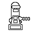
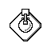

Defense is the most important aspect of a player's strategy. The map is filled with cunning and experienced players, and without an effective defense you will be easy pray for their missiles.
Sentry guns are an often-overlooked defensive component. They are absolutely vital to defend against incoming missiles swarms, so do not forget them. Sentry guns should be used for perimeter defense- build a shell of sentry guns mutple layers thick, and place your other structures inside them.
SAM sites are strutures with a surprising amount of strategic depth. Hostile players can take advantage of whether your SAM sites are set to automatic, manual, or semi-auto, how many interceptors, their speeds, and their ranges, SAM placement, and more. One important thing to keep in mind. Anti-Ballistic Missiles are the only way to shoot down incoming nuclear ICBMs. Yes, they are expensive, but do not neglect to buy them, or you will be a setting duck for nuclear warheads. Anti-Ballistic Missiles can only be purchased in the ABM silo structure.
ABM silos hold anti-ballistic missiles, your only way to defeat incoming ICBMs. Build your ABM silos near radar-stations to boost their accuracy. Anti-ballistic missiles are expensive, you don't want one to miss!
Radar Stations are vital defensive support structures that boost the accuracy of nearby SAMs and sentry guns. They are also very expensive to upgrade and keep online, so make sure you keep it well protected at the center of a cluster of sentries and SAM sites.